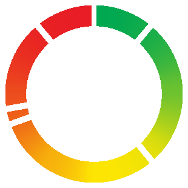

<div class="IndexRMObj paddModal avoid_losers_chart" style="height:100%;width:100%;">
  <div class="chartSec" style=" position: relative; height: 100%; width: 100%; display: flex; flex-direction: column; align-items: center;">
    <span class="IndexRun-close" style="position: absolute; top: 10px; right: 10px;" (click)="closeModal()">
      <span class="material-icons">close</span>
    </span>

    <h4>Avoid the Losers</h4>
    @if(showSlider){
    <ngx-slider [(value)]="SRValue" [options]="options" style="width:50%" [manualRefresh]="manualRefresh" (userChangeEnd)="onInput($event)"></ngx-slider>
    }

    <fieldset class="range__field">

      <!-- <input class="range" type="range" min="0" max="95" step="5" style="accent-color: #2ecc71" [value]="SRValue" (mouseup)="onInput($event)"> -->
      <!--<div class="cus_range_slider">
      <mat-slider min="0" max="95" step="5" class="cus_range_mat lineChart_range" showTickMarks="true">
        <input matSliderThumb [value]="SRValue" step="5" (mouseup)="onInput($event)">
      </mat-slider>
    </div>-->
      <!--<svg role="presentation" width="100%" height="10" xmlns="http://www.w3.org/2000/svg" class="chartLineAlign">
      <rect x="0" y="3" width="1" height="10" class="range__tick"></rect>
      <rect x="5.5%" y="3" width="1" height="10" class="range__tick"></rect>
      <rect x="10.9%" y="3" width="1" height="10" class="range__tick"></rect>
      <rect x="16%" y="3" width="1" height="10" class="range__tick"></rect>
      <rect x="21.2%" y="3" width="1" height="10" class="range__tick"></rect>
      <rect x="26.5%" y="3" width="1" height="10" class="range__tick"></rect>
      <rect x="31.7%" y="3" width="1" height="10" class="range__tick"></rect>
      <rect x="37%" y="3" width="1" height="10" class="range__tick"></rect>
      <rect x="42.2%" y="3" width="1" height="10" class="range__tick"></rect>
      <rect x="47.3%" y="3" width="1" height="10" class="range__tick"></rect>
      <rect x="52.5%" y="3" width="1" height="10" class="range__tick"></rect>
      <rect x="58%" y="3" width="1" height="10" class="range__tick"></rect>
      <rect x="63.1%" y="3" width="1" height="10" class="range__tick"></rect>
      <rect x="68.3%" y="3" width="1" height="10" class="range__tick"></rect>
      <rect x="73.6%" y="3" width="1" height="10" class="range__tick"></rect>
      <rect x="78.8%" y="3" width="1" height="10" class="range__tick"></rect>
      <rect x="83.8%" y="3" width="1" height="10" class="range__tick"></rect>
      <rect x="89%" y="3" width="1" height="10" class="range__tick"></rect>
      <rect x="94.2%" y="3" width="1" height="10" class="range__tick"></rect>
      <rect x="99.8%" y="3" width="1" height="10" class="range__tick"></rect>
    </svg>
      <svg role="presentation" width="100%" height="14" class="chartLineAlign" xmlns="http://www.w3.org/2000/svg">
        <text class="range__point" x="-2" y="10" text-anchor="start" style="cursor:pointer;" (click)="onInput(0)">All</text>
        <text class="range__point" x="5.5%" y="10" text-anchor="middle" style="cursor:pointer;" (click)="onInput(5)">5</text>
        <text class="range__point" x="10.9%" y="10" text-anchor="middle" style="cursor:pointer;" (click)="onInput(10)">10</text>
        <text class="range__point" x="16%" y="10" text-anchor="middle" style="cursor:pointer;" (click)="onInput(15)">15</text>
        <text class="range__point" x="21.2%" y="10" text-anchor="middle" style="cursor:pointer;" (click)="onInput(20)">20</text>
        <text class="range__point" x="26.5%" y="10" text-anchor="middle" style="cursor:pointer;" (click)="onInput(25)">25</text>
        <text class="range__point" x="31.7%" y="10" text-anchor="middle" style="cursor:pointer;" (click)="onInput(30)">30</text>
        <text class="range__point" x="37%" y="10" text-anchor="middle" style="cursor:pointer;" (click)="onInput(35)">35</text>
        <text class="range__point" x="42.2%" y="10" text-anchor="middle" style="cursor:pointer;" (click)="onInput(40)">40</text>
        <text class="range__point" x="47.3%" y="10" text-anchor="middle" style="cursor:pointer;" (click)="onInput(45)">45</text>
        <text class="range__point" x="52.5%" y="10" text-anchor="middle" style="cursor:pointer;" (click)="onInput(50)">50</text>
        <text class="range__point" x="58%" y="10" text-anchor="middle" style="cursor:pointer;" (click)="onInput(55)">55</text>
        <text class="range__point" x="63.1%" y="10" text-anchor="middle" style="cursor:pointer;" (click)="onInput(60)">60</text>
        <text class="range__point" x="68.3%" y="10" text-anchor="middle" style="cursor:pointer;" (click)="onInput(65)">65</text>
        <text class="range__point" x="73.6%" y="10" text-anchor="middle" style="cursor:pointer;" (click)="onInput(70)">70</text>
        <text class="range__point" x="78.8%" y="10" text-anchor="middle" style="cursor:pointer;" (click)="onInput(75)">75</text>
        <text class="range__point" x="83.8%" y="10" text-anchor="middle" style="cursor:pointer;" (click)="onInput(80)">80</text>
        <text class="range__point" x="89%" y="10" text-anchor="middle" style="cursor:pointer;" (click)="onInput(85)">85</text>
        <text class="range__point" x="94.2%" y="10" text-anchor="middle" style="cursor:pointer;" (click)="onInput(90)">90</text>
        <text class="range__point" x="99.8%" y="10" text-anchor="end" style="cursor:pointer;" (click)="onInput(95)">95</text>
      </svg>-->
    </fieldset>

    <div id="lineChartModal" style="min-height: 350px; height:calc(100% - 10rem); width: 90%;"></div>
    <!-- <div id="rangeLdrModal" style="position: absolute; top: 0px; height: 100%; width: 100%; display: flex; justify-content: center;z-index:99; align-items: center;">
      
    </div> -->
    @if(showSpinnerAcc_loaded){
      <div class="mat-spinner-loader-popup">
        <mat-spinner class="reviewloader-spinner" style=""></mat-spinner>
      </div>
        }
  </div>
</div>


